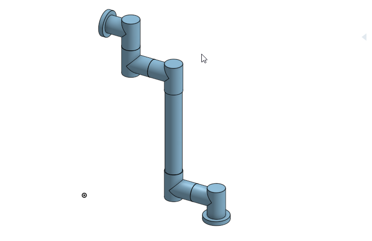
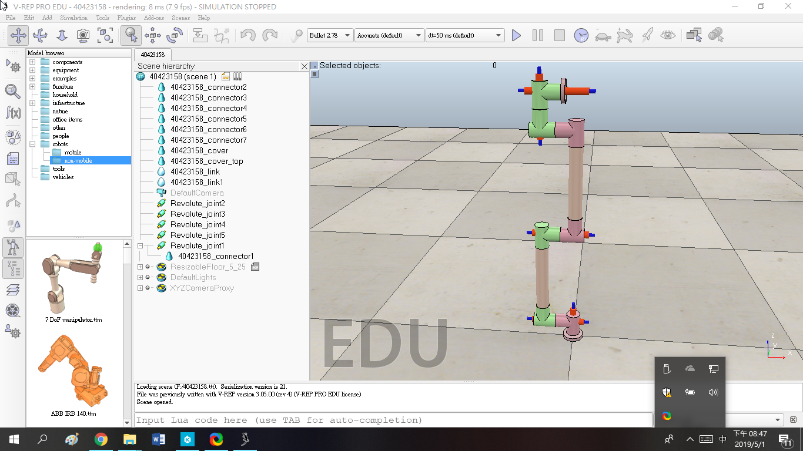
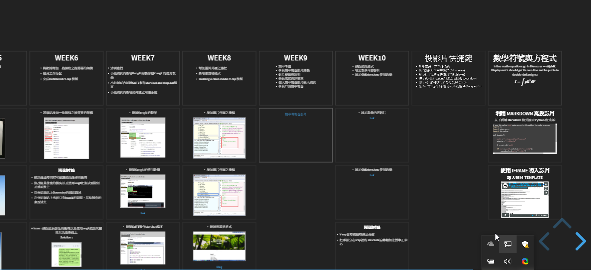
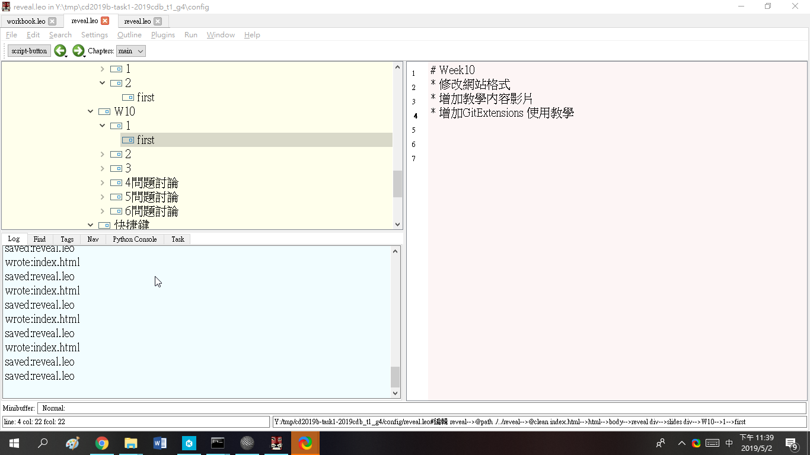
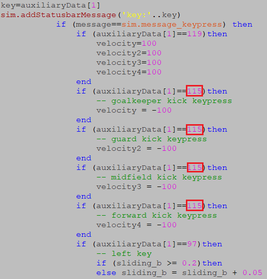
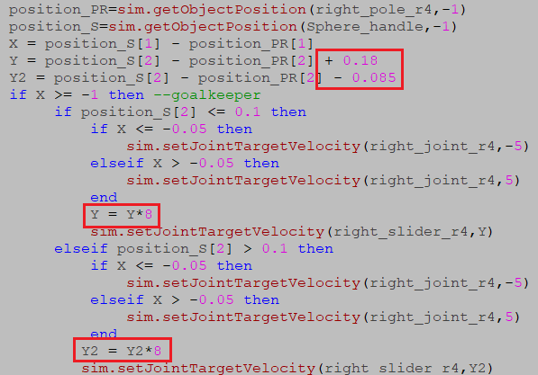
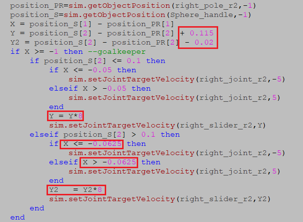

Week10 :
把上次組合圖中空地方改成實心，並且丟入VREP給予旋轉接頭之後卡住


補之前bubbleRob tutorial 製作過程
小組投影片W10


-----------------------------------------------------------------------------------------------------
Week11 :
建立 Virtualbox 虛擬主機
Vrep 手足球方向鍵控制
-----------------------------------------------------------------------------------------------------
Week12:
vrep手足球兩邊手動對打(單一軸)
建立Virtualbox 虛擬主機(成功版)
Vrep手足球多球員方向鍵測試
Vrep手足球(多球員)兩邊手動對打(缺送球機構版)
-----------------------------------------------------------------------------------------------------
Week13:
這周所做電腦對電腦，而程式碼部分是參考隔壁班同學，並仿造他去做發現人可以針對球跑但無法正確抓住位置，而之後可能會跟組員進行討論
-----------------------------------------------------------------------------------------------------
Week14:
Vrep經過上次詢問組員增加了邊界，並試著架設攝影機
Vrep電腦對電腦(單軸,修正人對球位置)
-----------------------------------------------------------------------------------------------------
Week15:
這週因為卡在程式問題所以進度有點落後，所以先完成比較簡單
手動VS手動(完整)
電腦VS人(單軸)
-----------------------------------------------------------------------------------------------------
Week16:
這週參考了這位同學加以仿做

把學弟踢球鍵一併改成S


分別修改球員對準求位址，並給了Y軸移動速度*8
電腦VS人(完整)
電腦VS電腦(完整)
-----------------------------------------------------------------------------------------------------
Week17:
評分比例:
學員出席 (20%): 19
Github 倉儲管理 (20%): 15
Onshape 協同操作 (20%): 5
V-rep 模擬 (20%): 15
程式開發 (20%): 10
自評分數: 64
-----------------------------------------------------------------------------------------------------